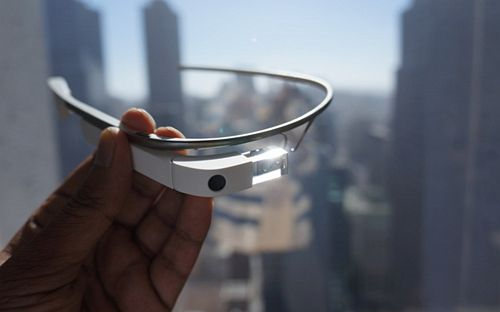

Google Glass 的增强现实特性，让不少人为之疯狂。作为可穿戴设备的重磅成员，Google Glass 嫣然已是明星。不过 Forrester 的一项调查却发现，美国消费者更亲睐苹果即将推出的智能手表，愿意购买智能手表比购买眼镜的人两倍还多。
此次调查围绕可穿戴设备，总共采访了 4600 个对象，其中 12% 想购买眼镜计算设备，但有 28% 的人对手腕计算设备更感兴趣，远远超前者。苹果无疑选中了一个更大的市场，这说明超过 1/5 的美国人对苹果“iWatch”感兴趣，即使这款产品还从未出现过。
在该调查中，眼镜计算设备甚至没有排进前三。最受欢迎的方式是别在衣服上，其次是手腕以及别在鞋子上。这个结果出乎意外但又在情理之中，Google Glass 虽然很酷，但人们更喜欢延续传统的佩戴习惯，希望设备能融入着装中，而不是突兀的挂在身上。
对于可穿戴设备来说，符合人们的生活习惯，或许比高超的技术更重要。Google Glass 相比传统眼镜体积更大，造型比较独特，续航短。以它目前的样子，更像是一个玩具。
此前 Tim Cook 就吐槽了 Google Glass 的违和感，认为说服人们去佩戴某物简直是不可想象的。Jack Dorsey 也更看好智能手表，他认为 Google Glass 过于概念，短期内难以落地。
现状是确实有太多竞争对手扎堆在智能手表这块，另一个原因是智能手表的技术门槛要低。许多大公司以及硬件创业公司推出了不少新品，在 KickStarter 上经常能看到智能手表设备上线，最近就有一款七彩手环 EMBRACE+。
但智能手表也有一些问题，通常情况下，人们看手表是因为赶时间。而智能手表作为与手机协同的工具，必然会接收大量推送，使得用户频繁的翻看手表。有一位用户购买了一块 Pebble，就遭遇了这个问题，以致于让旁人觉得他很粗鲁。